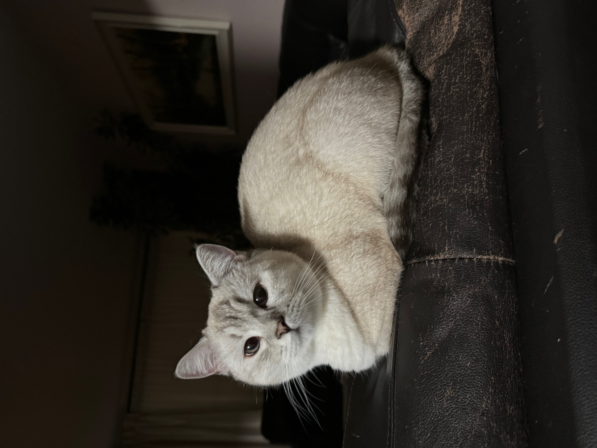
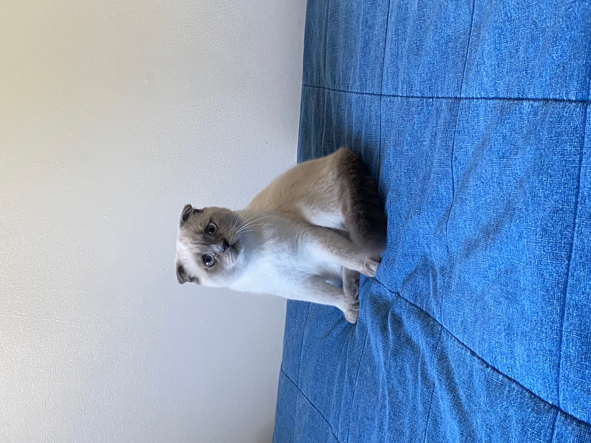
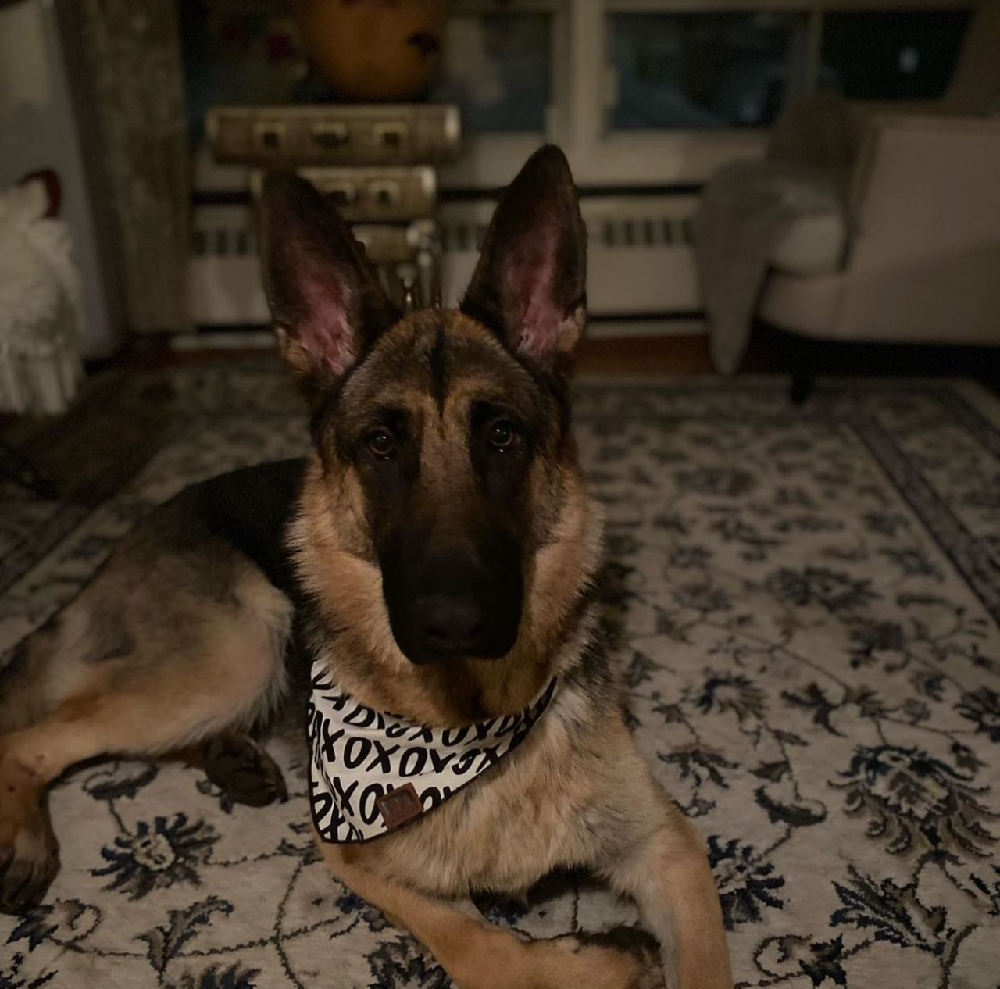

Haboub's adoption center is a canadian animal shelter that specializes in cats and dogs. Through this website you can know more about us, the pets we take care of and give us yours if you're not able to take care of it anymore.
|  |
Luna Female British Shorthair 10 months old Does not get along with other cats Does not get along with dogs She is suitable for family and small children |
|  |
Haboub Male Scottish Fold 14 months old Gets along with other cats Does not get along with dogs He is suitable for family and small children |
|  |
Lucy Female German Shepard 4 years old Does not get along with cats Gets along with dogs She is suitable for family and small children |
A dog can be a wonderful addition to any home, but whether you're an experienced pet parent or a first-time adopter, it's important to keep your canine companion's health and happiness a top priority. Below are some useful tips for all dog parents. And remember: If you're considering bringing home a new dog, please make adoption your first option. We encourage you to browse our directory of adoptable dogs in your area
Premium-quality dry food provides a well-balanced diet for adult dogs and may be mixed with water, broth or canned food. Your dog may enjoy cottage cheese, cooked egg or fruits and vegetables, but these additions should not total more than ten percent of his daily food intake.
Puppies should be fed a high-quality, brand-name puppy food (large breed puppy foods for large breeds). Please limit "people food," however, because it can result in vitamin and mineral imbalances, bone and teeth problems and may cause very picky eating habits and obesity. Clean, fresh water should be available at all times, and be sure to wash food and water dishes frequently.
Dogs need exercise to burn calories, stimulate their minds, and stay healthy. Individual exercise needs vary based on breed or breed mix, sex, age and level of health. Exercise also tends to help dogs avoid boredom, which can lead to destructive behaviors. Supervised fun and games will satisfy many of your pet's instinctual urges to dig, herd, chew, retrieve and chase.
Help keep your dog clean and reduce shedding with frequent brushing. Check for fleas and ticks daily during warm weather. Most dogs don't need to be bathed more than a few times a year. Before bathing, comb or cut out all mats from the coat. Carefully rinse all soap out of the coat, or the dirt will stick to soap residue.
To carry a puppy or small dog, place one hand under the dog's chest, with either your forearm or other hand supporting the hind legs and rump. Never attempt to lift or grab your puppy or small dog by the forelegs, tail or back of the neck. If you do have to lift a large dog, lift from the underside, supporting his chest with one arm and his rear end with the other.
Your pet needs a warm, quiet place to rest, away from all drafts and off the floor. A training crate or dog bed is ideal, with a clean blanket or pillow placed inside. Wash the dog's bedding often. If your dog will be spending a lot of time outdoors, be sure she has access to shade and plenty of cool water in hot weather, and a warm, dry, covered shelter when it's cold.
Follow your community’s licensing regulations. Be sure to attach the license to your dog’s collar. This, along with an ID tag and implanted microchip or tattoo, can help secure your dog’s return should she become lost.\
Daily inspections of your dog for fleas and ticks during the warm seasons are important. Use a flea comb to find and remove fleas. There are several new methods of flea and tick control. Speak to your veterinarian about these and other options.
Never give your dog medication that has not been prescribed by a veterinarian. If you suspect that your animal has ingested a poisonous substance, call your veterinarian or the ASPCA Animal Poison Control Center for 24-hour animal poison information at (888) 426- 4435.
Female dogs should be spayed and male dogs neutered by six months of age.
https://www.aspca.org/pet-care/dog-care/general-dog-care
Have you recently added a feline friend to your family? Congratulations! We know you’ll be thrilled to have your new cat in your home. If you are considering adopting a cat, please visit your local shelter. We encourage you to browse our directory of adoptable cats in your area, or use our shelter finder to start your search.
Read on for useful tips for new cat parents, and for those looking to brush up on their pet care skills.
We recommend purchasing high-quality, brand-name kitten or cat food. Your veterinarian will be able to assess your new cat or kitten and determine the best diet. Factors such as age, activity level and health make a difference in what and how much a cat should eat.
Most cats stay relatively clean and rarely need a bath, but you should brush or comb your cat regularly. Frequent brushing helps keep your cat's coat clean, reduces the amount of shedding and cuts down on the incidence of hairballs.
To pick up your cat, place one hand behind the front legs and another under the hindquarters. Lift gently. Never pick up a cat by the scruff of the neck or by the front legs.
Your pet should have her own clean, dry place in your home to sleep and rest. Line your cat's bed with a soft, warm blanket or towel. Be sure to wash the bedding often. Please keep your cat indoors. Outdoor cats do not live as long as indoor cats. Outdoor cats are at risk of trauma from cars, or from fights with other cats, raccoons and free-roaming dogs. Coyotes are known to eat cats. Outdoor cats are more likely to become infested with fleas or ticks, as well as contract infectious diseases.
If allowed outdoors, your cat must wear a safety collar and an ID tag. A safety collar with an elastic panel will allow your cat to break loose if the collar gets caught on something. And for both indoor and outdoor cats, an ID tag or an implanted microchip can help ensure that your cat is returned if he or she becomes lost.
All indoor cats need a litter box, which should be placed in a quiet, accessible location. In a multi-level home, one box per floor is recommended. Avoid moving the box unless absolutely necessary, but if you must do so, move the box just a few inches per day. Keep in mind that cats won't use a messy, smelly litter box, so scoop solid wastes out of the box at least once a day. Dump everything, wash with a mild detergent and refill at least once a week; you can do this less frequently if using clumping litter. Don't use ammonia, deodorants or scents, especially lemon, when cleaning the litter box. If your cat will not use a litterbox, please consult with your veterinarian. Sometimes refusal to use a litter box is based on a medical condition that required treatment.
Cats need to scratch! When a cat scratches, the old outer nail sheath is pulled off and the sharp, smooth claws underneath are exposed. Cutting your cat’s nails every two to three weeks will keep them relatively blunt and less likely to harm the arms of both humans and furniture. Provide your cat with a sturdy scratching post, at least three feet high. The post should also be stable enough that it won't wobble during use, and should be covered with rough material such as sisal, burlap or tree bark. Many cats also like scratching pads.
Your cat should see the veterinarian at least once a year for an examination and annual shots, and immediately if she is sick or injured.
Never give your cat medication that has not been prescribed by a veterinarian. If you suspect that your animal has ingested a poisonous substance, call your veterinarian or the ASPCA Animal Poison Control Center for 24-hour animal poison information at (888) 426-4435.
https://www.aspca.org/pet-care/cat-care/general-cat-care
Samy Mezimez
40275766
mezimez.samy@gmail.com
Your information is fully confidential and will not be sold or misused. Your privacy is one of our top concern and it is a pillar in our foundation and values.